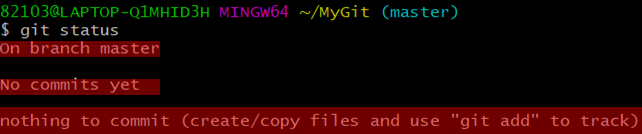
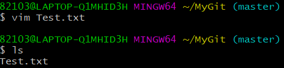
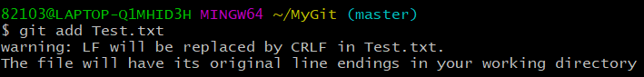
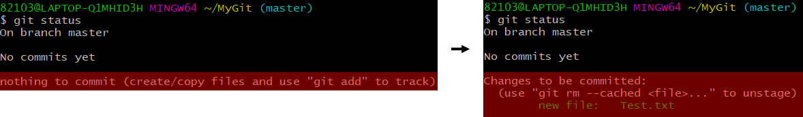
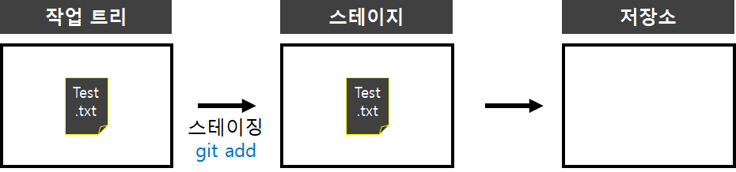
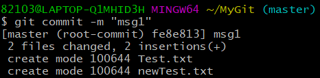
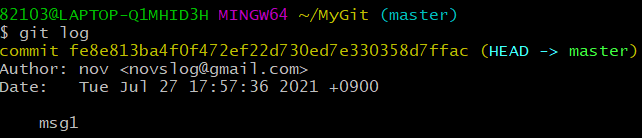
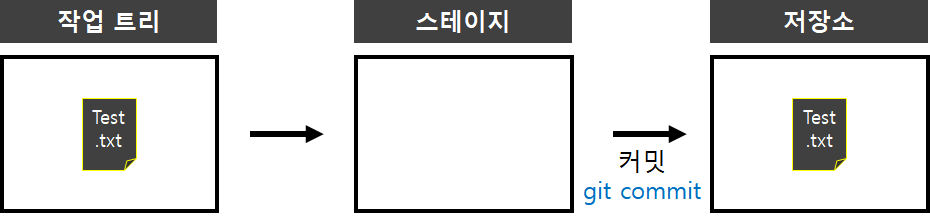
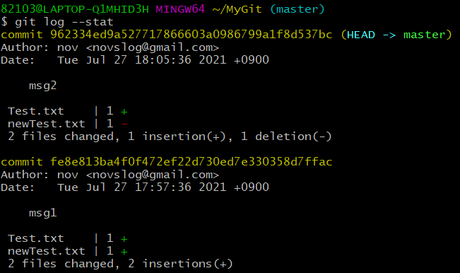
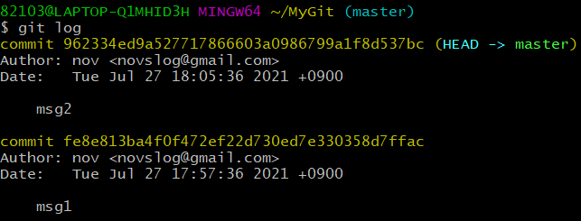

* 다음 포스팅은 깃(Git)의 사용방법에 대하여 정리한 것으로, 개인적인 공부 기록용으로 작성한 글 이기에 잘못된 내용을 포함하고 있을 수 있습니다.
* Window 운영체제를 기준으로 작성했습니다.
목차
#1 깃 상태 확인 : git status
#2 스테이징 : git add
#3 커밋 : git commit
#4 저장소에 저장된 버전 확인 : git log
* --stat 옵션
#5 스테이징 & 커밋 일괄 처리 : git commit -am
... BEFORE START
#3 깃 버전 관리 VOL1 포스팅 에서 깃 저장소를 만들고 , 버전 관리에 대한 전체적인 개요와 용어들을 소개 하였다.
이번 포스팅 에서는 실제로 명령어를 통해 스테이징과 커밋을 실습해 보고자 한다.
#1 깃 상태 확인 : git status
MyGit 디렉터리 (버전 관리를 수행할 디렉터리) 로 이동하여, git status 명령어를 입력해 보자. git status 는 깃 상태를 확인하는 명령어이다.
$ git status그러면 아래 그림과 같이 3가지 문구가 출력된다. 각각이 의미하는 바는 다음과 같다.
On branch master : 현재 master 브랜치에 있다는 의미이다. (브랜치에 대해서는 추후에 자세하게 정리할 예정이다.)
No commits yet : 아직 커밋한 파일이 없다는 의미이다.
nothing to commit : 현재 커밋할 파일이 없다는 의미이다.

이제 버전 관리를 수행할 txt 파일을 만들어 보자. vim 편집기를 이용해 Test.txt 파일을 하나 생성하고 , hello 문구를 입력하고 종료한다. (Vim 편집기의 사용방법에 대해서는 #2 리눅스 편집기 빔(Vim) 사용방법 포스팅에서 이미 다루었다. 혹시 빔 편집기에 대한 지식이 부족하다면 참고 하도록 하자.)
$ vim Test.txt
$ ls
#2 스테이징 : git add
작업 트리에 존재하는 Test.txt 파일을 스테이지 영역으로 스테이징 해보자. 다음 명령어를 입력한다.
$ git add Test.txt깃 명령은 리눅스를 기반으로 하기에, 윈도우에서 git add 명령을 입력하면 다음과 같은 메시지가 출력된다. (warning: LF will be replaced by CRLF int (txt 파일명) The file will have its original line endings in your working directory)

이는 자동으로 텍스트 파일의 CRLF 문자를 LF 문자로 변환하여 커밋을 수행할 것이라는 의미인데, 윈도우와 리눅스의 개행문자 (줄바꿈 문자)가 다르기 때문에 출력되는 메시지이다.
윈도우는 CRLF 라는 개행 문자를 사용하는 반면 리눅스는 LF 개행 문자를 사용한다. 말이 길어졌는데 프로그래머가 따로 어떠한 조치를 해야 하는 것은 아니기에 무시해도 된다.
만약 작업트리에 존재하는 모든 파일을 한 번에 스테이지 영역으로 옮기고 싶다면, git add 명령 뒤에 파일 이름 대신 마침표(.)를 붙이면 된다.
$ git add . // 작업트리 -> 스테이지 일괄처리깃의 상태를 확인해 보자.
$ git statusnothing to commit 이라는 글자가 Changes to be commited: 라는 문구로 바뀌었다. 아래와 같이 출력되면 Test.txt 파일을 성공적으로 작업 트리 영역에서 스테이지 영역으로 옮긴 것이다.
 
#3 커밋 : git commit
스테이지 영역에 존재하는 Test.txt 파일을 저장소(Repository)로 옮겨보자. 즉, 버전을 만드는 것 인데 이를 "커밋(Commit)" 이라고 부른다. 커밋을 할 때는 간단하게 어떠한 변경 사항이 있는지 커밋 메시지를 남겨 두는데 git commit 명령과 -m 옵션을 결합 시키면 된다. 다음 명령을 입력해 보자.
$ git commit -m "msg1"필자는 따로 newTest.txt 파일을 스테이지 영역에 올려 두어서, 2 files changed, 2 insertions(+) 라고 출력 되었는데, 위의 과정을 따라왔다면 1 files changed, 1 insertions(+) 라고 출력 될 것이다.

#4 저장소에 저장된 버전 확인 : git log
저장소에 저장된 버전을 확인해 보자. 다음 명령어를 입력한다.
$ git log이메일 주소, 커밋 메시지 등 여러 정보가 함께 출력된다.
 
* --stat 옵션
git log 명령어에 --stat 옵션을 함께 사용하면, 더욱 자세하게 버전 정보를 확인할 수 있다.
파일의 변경점 이라던지 각 버전이 어떠한 파일들과 연관이 되어 있는지 출력해 준다.
$ git log --stat
#5 스테이징 & 커밋 일괄 처리 : git commit -am
한 번 커밋한 적이 있는 파일은 git commit -am 명령으로 스테이징과 커밋을 한 번에 처리하는 것이 가능하다.
작업트리에 존재하는 Test.txt 파일의 내용을 Vim 편집기를 이용해 약간 수정해 주고, 다음 명령어를 입력해 주자.
$ git commit -am "msg2"
$ git log수정된 Test.txt의 내용이 저장된 새로운 버전 정보가 출력된다.
